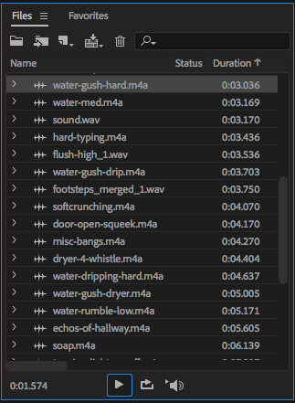
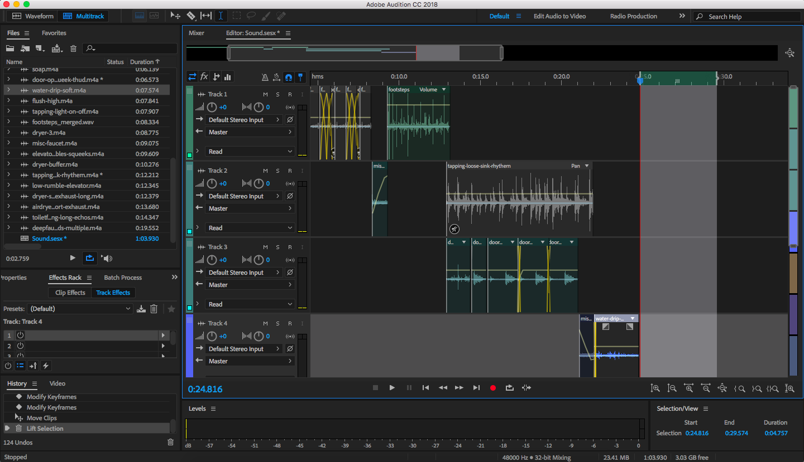

When assigned to go out and hunt for sounds, my first instinct was to run to the bathroom.
I initially thought my sound experience was going to revolve around water, so I focused on capturing the sound of flushing toilets, running water, and other drip-drops of the leaky pipes. I eventually made my way downstairs and around the halls to capture other sounds of interest.
This ended up being the bulk of my remix.
Once the sounds were captured and uploaded, I went through and renamed the files according to what I thought would be most helpful for me in editing.
After that, I started playing around with the program, snipping and mixing files, messing around with effects, etc.
Once I started getting the hang of things, I laid down all the tracks I thought I wanted to use, playing around with fades and overlapping to figure out how I wanted the files to interact.
First step in editing. Trying to make somewhat of a beat.
Midway through. Pretty messy and still not sounding too good. A lot of unnecessary files and repetition.
After cleaning up my files, I was able to get a much better read on what thing worked and what didn't. I also finally felt comfortable enough in the program to be able to manupulate the files to sound how I wanted them to.
Play me!
All done. Realizing now it wasn't really necessary to put the clips in different tracks since there isn't much overlapping.